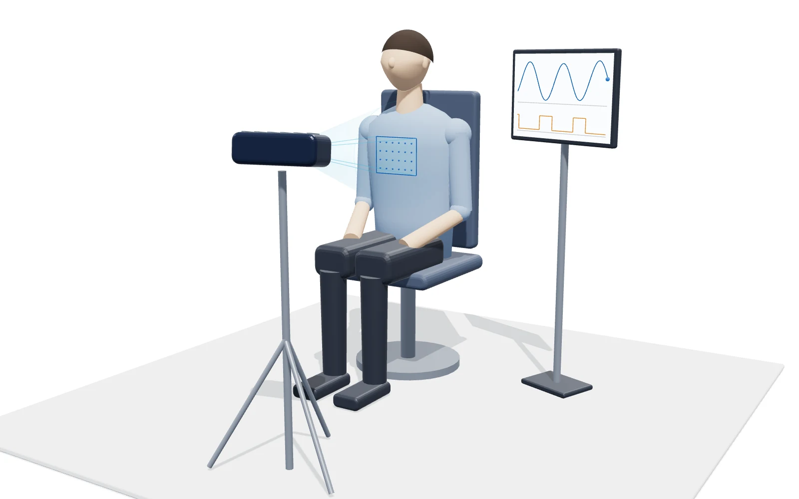

표면유도 호흡추적 (SGRT)
K-LINAC 대과제(주관 한국전기연구원, 세부주관 ETRI)의 디지트랙 위탁 연구로, 원거리 표면 재구성과 근거리 실시간 호흡 추적을 상용 3D 센서로 구현하는 초기 단계 연구입니다. 상용 시스템은 센서·알고리즘 선택 근거를 공개하지 않아, 국산 스택은 그 근거부터 직접 만들어야 합니다.

사례 PDF 열기K-LINAC 대과제(주관 한국전기연구원, 세부주관 ETRI)의 디지트랙 위탁 연구로, 원거리 표면 재구성과 근거리 실시간 호흡 추적을 상용 3D 센서로 구현하는 초기 단계 연구입니다. 상용 시스템은 센서·알고리즘 선택 근거를 공개하지 않아, 국산 스택은 그 근거부터 직접 만들어야 합니다.

사례 PDF 열기